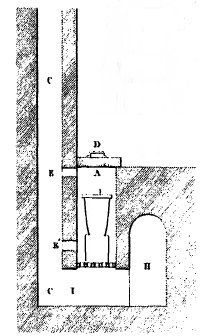

Le laboratoire alchimique (7) :
la voie des aluminates

Le laboratoire alchimique (7) :
la voie des aluminates
revu le 20 mars 2016
Des Comptes rendus de l'Académie des sciences, publiés dans le courant du XIXe siècle, étaient consacrés à la chimie minéralogique et tout spécialement à la production artificielle du corindon, du rubis et de différents silicates cristallisés. Nous avons déjà largement évoqué la teneur de ces Comptes rendus dans les sections du Mercure et du Soufre. De même, nous avons envisagé la voie des carbonates, des sulfures et des sulfates. Un autre mode de reproduction des gemmes précieuses mérite d'être abordé d'une part parce qu'il est se révèle relativement aisé à reproduire, d'autre part parce qu'il met en cause des agents qui pouvaient être facilement utilisés par les anciens alchimistes. Enfin, il permet de comprendre certaines allégories et des détails d'iconographie des textes modernes et anciens. Cette note que nous allons analyser a été publiée dans les Comptes rendus de la séance du lundi 3 décembre 1877, sous la signature d'Edmond Frèmy et de M. Feil [C.R., 1877, T. LXXXV, n°23].
N'en doutons pas, le sujet véritable des alchimistes était la production artificielle des minéraux. Cette hypothèse, que nous avons avancé dès le début de notre travail sur l'alchimie, présente au point de vue de la Science un intérêt que tout le monde comprendra, car elle jette le plus grand jour sur la façon de travailler des alchimistes et sur l'interprétation de nombreuses allégories de textes tant anciens que modernes. Elle permet de comprendre de façon parfaitement rationnelle le travail des alchimistes. Pris en tant que tel, le minéral qui paraît le plus pur contient presque toujours, à l'état d'interposition, de corps étrangers qui se trouvaient dans le milieu qui l'a formé : la reproduction par synthèse permet de distinguer les éléments constitutifs de ceux qui ne sont qu'accidentels. Nous avons montré dans la section sur la réincrudation qu'une expérience simple, la dévitrification du verre [observée pour la première fois par Réaumur] s'avère être une authentique opération alchimique, dans le sens du moins où nous comprenons la science d'Hermès. Cette dévitrification qui conduit à l'opacification du verre, traduit une sorte de « transmutation » de la forme du matériau sans que pour autant, bien sûr, il y ait transmutation métallique [cf. à ce sujet un travail récent publié sur Frédéric Joliot-Curie]. Ainsi, un grand nombre de minéraux ont été produits artificiellement par la voie sèche, par la voie humide et par des méthodes d'ionisation dues à Becquerel. Des savants aussi illustres que P. Hautefeuille, H. De Sénarmont, J.J. Ebelmen, H. Sainte-Claire Deville, M. A. Gaudin, Caron, M. Debray ont tour à tour contribué, par leur travaux, à la compréhension des différents modes de cristallisation de l'alumine et le corindon est peut-être le minéral qui a le plus exercé la sagacité des chimistes. Par exemple, en traitant à chaud le phosphate d'alumine et la chaux par de l'acide chlorhydrique, Debray a obtenu l'apatite et l'alumine cristallisée. Toutefois, ces beaux travaux n'ont permis de réaliser la synthèse que de quantités relativement faibles de rubis ou de saphirs, sans commune mesure avec les faits relatés par les alchimistes ou les historiens de l'alchimie. C'est le lieu de rappeler ici que l'idée de pouvoir transmuter un « métal vil » en or est relativement moderne et semble contemporaine de l'apport des Arabes aux legs grecs et romains sur l'alchimie. Nous avons toute raison de croire que les prétendus récits de « transmutation authentique » cachent en fait des tours de main spéciaux concernant la façon de réaliser la pierre, c'est-à-dire d'orienter sa forme cristalline et sa teinture par un oxyde approprié : le cas de l'aventurine que nous analyserons à part est à cet égard exemplaire.
¯
Nous parlerons donc ici d'un procédé qui permet de produire de l'alumine différemment colorée et cristallisée, c'est-à-dire du rubis et du saphir, en masses suffisantes pour être employées dans l'horlogerie et pour se prêter à la taille des lapidaires. Edmond Frèmy et Feil ont souhaité se rapprocher autant que possible des conditions naturelles qui ont déterminé probablement la formation du corindon, du rubis et du saphir. Dans ce but, ils ont emprunté à l'industrie ses appareils calorifiques les plus énergiques, qui permettent de produire une température élevée et surtout de la prolonger pendant longtemps ainsi que d'opérer sur de grandes masses. C'est en effet sur 30 kg de matières qu'ont oeuvrés Frèmy et Feil ; ces matières ont été chauffées sans interruption pendant vingt jours. Certaines expérience ont été réalisée dans le four de l'usine Feil, pour celles qui exigeaient la plus haute température. Lorsque les essais demandaient une calcination prolongée, c'était un four à glaces qui était utilisé. La méthode utilisée était la suivante : dans un premier temps, un aluminate fusible était formé puis chauffé au rouge vif avec une substance siliceuse ; dans ce cas, l'alumine se trouvait dégagée lentement de sa combinaison saline en présence d'un fondant et cristallisait. La cristallisation de l'alumine a été attribuée par Frèmy à différentes causes, dues :
- soit à la volatilisation de la base qui est unie à l'alumine ;
- soit à la réduction de cette base par les gaz du fourneau ;
- soit à la formation d'un silicate fusible qui, par la combinaison de la silice avec la base, isole l'alumine ;
- soit enfin à un phénomène de liquidation qui produit un silicate très fusible et de l'alumine peu fusible.
Il semble que tous ces cas se soient présentés dans les essais mais le déplacement de l'alumine par la silice paraît être le procédé le plus sûr pour opérer la cristallisation de l'alumine. Plusieurs aluminates fusibles se prêtent à ces différents genres de décomposition et celui qui donne les résultats les plus nets est l'aluminate de plomb.
--> Lorsqu'on place dans un creuset de terre réfractaire un mélange de poids égaux d'alumine et de minium, et qu'on calcine au rouge vif pendant un temps suffisant, on trouve dans le creuset, après son refroidissement, deux couches différentes ; l'une est vitreuse et formée principalement de silicate de plomb, l'autre est cristalline et elle présente souvent des géodes remplies de beaux cristaux d'alumine. Dans cette opération les parois du creuset agissent par la silice qu'elles contiennent ; elles sont toujours amincies et souvent percées par l'action de l'oxyde d eplomb : aussi, pour éviter la perte du produit faut-il opérer dans un double creuset.
--> L'expérience décrite donne des cristaux blancs de corindon. Lorsque on veut obtenir des cristaux qui présentent la couleur rose du rubis, il faut ajouter au mélange d'alumine et de minium 2 à 3 % de bichromate de potasse [alun de chrome]. La coloration bleue du saphir est obtenue en employant une petite quantité d'oxyde de cobalt [très anciennement connu] mélangé à une trace de bichromate de potasse. Les cristaux de rubis ainsi obtenus sont recouverts de silicate de plomb qui peut être enlevé de différentes façons, soit par l'action de l'oxyde de plomb fondu, soit par l'acide fluorhydrique [exclu jusqu'au XIXe siècle], soit par la potasse en fusion, et ensuite par l'action des alcalis et des acides. Dans certains cas, on trouve dans les géodes des cristaux qui sont presque purs et qui présentent alors tous les caractères des corindons et des rubis naturels.
--> Les rubis obtenus ont la composition, l'éclat adamentin, la dureté, la densité et la forme cristalline des rubis naturels. Ces rubis rayent en effet le quartz et la topaze ; ils perdent leur coloration rose quand ils sont fortement chauffés et la reprennent par refroidissement ; soumis à des lapidaires, ils ont parfois été trouvés plus durs que les rubis naturels et ils usent très rapidement les meilleures meules d'acier trempé. Les observations cristallographiques montrent que ces rubis ont la forme de prismes hexagonaux et offrent dans leur intérieur une croix noire et des anneaux colorés sur les bords.Nous allons reprendre les éléments de cette expérience alchimique par le menu. Voyons d'abord la question du fourneau.
Dans un fourneau quelconque, on distingue le foyer ou cuve, espace dans lequel le combustible est contenu ; la grille qui fait le fond de la cuve, et qui supporte le combustible ; et la cheminée, tuyau plus ou moins élevé que parcourent les gaz et les vapeurs qui s'échappent du foyer. Nous allons décrire ici les éléments d'un fourneau à vent [nous renvoyons à la section compendium pour les outils utilisés en chimie et les techniques utilisées dans les essais classiques].

FIGURE I
(fourneau à vent ; extrait des Essais par la voie sèche de P. Berthier)Les fourneaux à vent ne diffèrent des fourneaux de calcination qu'en ce qu'ils sont accompagnés d'une cheminée fixe très élevée (C) qui détermine une forte aspiration d'air, d'où résulte une combustion active et une production de chaleur importante. Le fourneau est situé au-dessus du cendrier souterrain (I) dans lequel on pénètre par une voûte latérale (H), et ce cendrier communique avec la cheminée (C) par le conduit (C). Deux ouvertures (EE') pratiquées dans la cuve de chaque fourneau, peuvent à volonté laisser passer les vapeurs dans ce conduit C. La première ouverture E est située tout à fait au haut de la cuve ; elle est ouverte pendant tout le travail ; la seconde (E'), qui est au contraire ordinairement bouchée, se trouve à 7 ou 8 cm seulement au-dessus de la gille. Lorsqu'on veut retirer le creuset du fourneau, on enlève le couvercle (D), un ouvrier descend dans le cendrier et en passant son bras dans le conduit (C), il enlève la brique qui sert à boucher le trou inférieur (E') ; dès lors, le tirage s'établit par cette ouverture et l'on ne ressent presque aucune chaleur à la partie supérieure du fourneau. On rebouche l'ouverture (E') aussitôt que l'on commence une nouvelle fusion. Ces fourneaux à vent sont ordinairement carrés et le choix de la forme dépend des matériaux de construction dont on dispose. Quand on se sert de briques, ce qui est le cas le plus ordinaire, on préfère la forme carrée à la forme ronde. La cuve des fourneaux doit être faite avec l'argile la plus réfractaire possible et elle doit pouvoir supporter les brusques changements de température. L'ouverture de la cuve doit être bordée d'un cadre en fer pour qu'elle ne soit pas détériorée par le mouvement des ringards et des pinces. Le cendrier doit être muni de portes très grandes que l'on puisse ouvrir et fermer à volonté pour atteindre le maximum de température, afin que l'air puisse affluer avec la plus grande facilité possible dans la cuve. Dans un fourneau à vent, le maximum de chaleur est limité par les dimensions de la cheminée et la température s'y accroît progressivement et graduellement.
On peut aussi se servir d'un fourneau à soufflet ou forge d'essai. Ce type de fourneau permet d'entretenir un feu plus longtemps qu'un fourneau à vent ; il semble donc que chaque fois - et c'est le cas pour la Grande coction- qu'une forge soit préférable à un fourneau à vent toutes les fois que l'on veut tenir pendant le plus de temps possible un essai exposé à une très haute température. On peut encore se servir des fourneaux de coupelle ou à moufle. Les fourneaux de coupelle étaient déjà employés dans le XIIIe siècle ; ce sont des fourneaux à réverbère, portatifs, au milieu desquels on place un petit four demi cylindrique qu'on appelle la moufle. Cette moufle se trouvant entourée de toutes parts de combustible en ignition, s'échauffe très fortement, et l'on peut exécuter dans son intérieur toutes les opérations qui exigent la présence de l'air et qui ne pourraient pas se faire au contact des matières cherbonneuses, telles que les grillages, les scorifications et les coupellations.On emploie fréquemment la silice pour déterminer la fusion des gangues dans les essais qui se font à une chaleur élevée. La silice se combine avec toutes les bases et forme des silicates. Nous avons vu plus haut qu'un des modes de cristallisation de l'alumine serait déterminé par la liaison entre la base unie à l'alumine et la silice. Les silicates ne sont pas également fusibles et il faut donc connaître le degré de fusibilité des différents silicates. L'étude de ces composés est d'une grande importance tant en métallurgie qu'en alchimie.
è La silice séparée d'une combinaison par voie humide, forme une gelée transparente et incolore ; cette gelée, exposée à l'air sec ou calcinée, perd toute son eau et se change en une poudre blanche aussi ténue et légère que la farine. Les minéralogistes désignent la silice sous les noms de quartz ou cristal de roche. La silice est absolument infusible à la plus haute température des fourneaux. elle peut être réduite à l'aide d'une faible chaleur par les alcalis fixes [potasse et soude]. Il s'en réduit aussi une certaine quantité au contact du charbon et du fer. Quoique la silice soit un acide très faible, on peut la combiner avec la plupart des bases, soit par voie humide, soit par voie sèche. Elle ne forme de combinaison soluble dans l'eau qu'avec la potasse et la soude, et elle ne se combine pas avec l'ammoniaque [l'ammoniaque est absolument impropre à l'oeuvre car il s'agit d'un alcali volatil ; il est par contre possible que le sel ammoniac joue un rôle dans la première séparation, en combinaison avec l'huile de tartre par défaillance, en formant dans ce que l'on appelle le caput ou tête morte, le sel fébrifuge de Sylvius]. A l'état de quartz ou de silex, elle est inattaquable par les dissolutions de potasse et de soude caustiques. La silice se dissout aussi dans les carbonates alcalins bouillants [on voit immédiatement les défauts de notre schéma de synthèse n°1 où l'on ne tenait pas compte de la silice ni des carbonates en tant que tel dans le creuset ; le schéma n°3 du tartre vitriolé répare cette erreur fâcheuse]. A la faveur d'une forte chaleur, la silice acquiert assez de force pour décomposer un grand nombre de sels ; ainsi elle se fond avec effervescence dans les carbonates alcalins en chassant l'acide carbonique. La silice peut aussi se combiner, par voie sèche, avec différents sels pour former des sels doubles ou bi-silicates qui ont un rôle de première importance en tant que fondants.
--> Pour l'usage par la voie sèche, on prépare la silice avec du quartz en morceaux cristallins ou avec du sable quartzeux. Quand on se sert de quartz, on « l'étonne » d'abord puis, une fois qu'il a été rendu friable, on peut le réduire en poudre fine sous le pilon avec la grande facilité. Après qu'on l'a tamisé, on le fait bouillir avec de l'esprit de sel [acide chlorhydrique ou acide muriatique] afin d'en séparer les parcelles de fer que le frottement détache toujours du mortier ; on le lave et on le calcine. Quand on emploie du sable [ammoV], il faut d'abord le laver dans un grand volume d'eau et jusqu'à ce que le liquide ne se trouble plus, pour enlever la matière argileuse dont il est souvent mélangé ; puis on doit le faire bouillir avec de l'esprit de sel qui dissout le carbonate de chaux et l'oxyde de fer dont il est presque toujours souillé ; enfin on le lave et on le calcine. On peut employer le sable sans le broyer, quand il doit se former une combinaison très fusible, mais dans le cas contraire, il est indispensable de le réduire en poudre fine, après l'avoir étonné par le feu. Dans les manufactures de porcelaine et dans les manufactures de faïence dite terre de pipe, on prépare de la silice en farine qui est très propre à servir aux essais : on obtient cette farine en passant sous des meules du sable blanc ou du silex étonné par le feu. Nous parlerons d'abord du mélange de silicates alcalins et terreux simples. Nous aurons ainsi l'occasion d'évoquer de façon quasi-directe des expériences que n'ont pas manquées de pratiquer les anciens alchimistes.
--> Lorsqu'on chauffe de la silice avec du carbonate de potasse ou de soude dans des creusets brasqués, une partie de la matière alcaline s'infiltre dans la brasque avant que la combinaison ait pu avoir lieu ; d'un autre côté, une autre portion très notable de l'alcali se volatilise lorsque la température a atteint un certain degré d'élévation. Ainsi, les silicates de potasse et de soude sont très fusibles. a la température de 500°C, il ne faut que 3 parties de carbonate de potasse et de soude pour former avec la silice une combinaison très fusible. A la température de 1500°C, une très petite quantité d'alcali suffit pour produire cet effet. Les silicates KS3, KS6 et KS2 se fondent en verres transparents plus ou moins bulleux. Les silicates de soude se fondent aussi en verre transparent très bulleux [ceci peut expliquer certains textes, en particulier, l'Hermès Dévoilé de Cyliani] ; ces verres étaient d'un beau rouge de groseille, ceci ayant été probablement déterminé par une petite quantité de sulfate que contenait le carbonate de soude et qui s'est transformé en sulfure par le contact du charbon[on remarque à quel point peut agir le « feu vulgaire » dans la Grande coction et comment on peut s'en prémunir, sans doute, par l'artifice de la moufle du fourneau à réverbère qui empêche le contact avec le charbon].
Il semble que la soude soit plus fondante que la potasse, toute proportion gardée. Nous noterons que les silicates alcalins ne prennent jamais l'aspect pierreux et donnent toujours des verres sans aucun indice de cristallisation ni de structure lamelleuse, qu'on les abandonne ou non à un refroidissement lent ou rapide
[cela est parfaitement logique, vu dans l'optique du système : il manque le « Corps » ou toison d'or, procuré par la terre de Chio ou de Samos, appelée encore terre cimolienne ; en quelque sorte, le principal acteur est absent : on assiste donc à une liaison purement factuelle entre l'alcali fixe et la silice mais, en quelque sorte, le mariage des « époux hermétiques » ne peut avoir lieu, faute du Corps et de l'Âme].
Les proportions requises sont de l'ordre de 9 parties de silice pour 1 partie d'alcali fixe.
Lorsque on chauffe très fortement du carbonate de chaux [craie ou marbre] avec de la silice réduite en poudre impalpable, il y a toujours combinaison, et lorsque la chaux domine,le silicate se dissout en totalité dans les acides. Mais il n'y a fusion que lorsque la silice et la chaux sont employées dans de sproportions qui ne peuvent varier qu'entre des limites peu distantes. il faut une proportion de l'ordre de 5 à 7 parties de silice pour 2.5 à 4.5 parties de chaux pour former une masse fusible. La silice combinée avec la magnésie n'a pu donner que des masses ayant éprouvé un début de fusion.
--> La fusibilité des silicates simples paraît dépendre de trois causes :
- la fusibilité propre de la base ;
- son énergie chimique ;
- la proportion dans laquelle elle entre dans le composé.
Quant aux silicates doubles et multiples, leur fusibilité dépend de la fusibilité des silicates élémentaires. On peut toujours faire fondre un silicate infusible par lui-même en le combinant avec une proportion convenable d'un silicate fusible. Les silicates alcalins donnent à leurs combinaisons avec d'autres silicates un grand degré de fusibilité. On sait que toutes les pierres qui contiennent un alcali sont fusibles ou tout au moins ramollissables. La potasse et la soude mêlées ensemble sont plus fondantes que chaque alcali employé séparément. La proportion optimale semble être 92 % de silice, 4.7 % de potasse et 2.9 % de soude. Lorsqu'on chauffe un silicate simple ou multiple qui renferme une proportion un peu forte d'alcali, avec une base fixe et irréductible, cette base met en liberté une partie de l'alcali qui se volatilise. Le feldspath qui est composé de 65.9 % de silice, 17.7 % d'alumine et 16.3 % de potasse se fond, à Sèvres, comme au grand fourneau à vent, en verres transparents et toujours remplis d'une multitude de petites bulles.3)- les agents facilitant la fusion, ou fondants
L'étude des fondants, nous l'avons vu maintes fois [cf. section sur le Mercure philosophique et sur le tartre vitriolé], est l'une des parties les plus essentielles de l'alchimie. Il ne suffit pas, en effet, de fondre les colombes de Diane ; il faut encore les conjoindre après leur dissolution initiale, signe manifeste de la 2ème putréfaction. C'est là l'un des buts des fondants, ou si l'on préfère du Mercure dont le but est exactement qualifié par l'adage « solve et coagula ». Le cas qui nous occupe est celui de substances oxydées, c'est-à-dire réduites à l'état de chaux métalliques, de nature siliceuses ou basiques. Or, nous savons que la silice s'unit aux bases et forme avec elles des silicates plus ou moins fusibles. Le but à atteindre sera, par suite, la préparation d'un mélange fusible de silice et de bases ; voila où gît l'un des secrets du Mercure. Ainsi voyons-nous que la détermination du fondant optimal implique la connaissance de la fusibilité et des propriétés essentielles des silicates. On peut à cet égard diviser les bases en deux catégories, selon qu'elles soient fusibles, c'est-à-dire, les alcalis, l'oxyde de plomb, l'oxyde de bismuth ; ceux-ci forment des silicates d'autant plus fusibles que la base y domine ; ou selon qu'elles soient infusibles. Ces bases infusibles ou peu fusibles donnent des composés dont la fusibilité sera d'autant plus grande que le mélange se rapprochera davantage d'une sorte de moyenne, ne renfermant ni excès de silice, ni excès de base. Seulement ce composé moyen [qui nous rappelle le milieu ou moyen de Fulcanelli, cf. section sur les Principes] sera selon les bases, un sous-silicate, un proto-silicate, un sesqui-silicate et même, dans le cas des bases fortes infusibles, un bi ou un tri-silicate. Veulliez noter qu'il s'agit ici de formules minéralogiques où les qualifications de sous, proto, sesqui, bi et tri expriment le rapport des proportions d'oxygène contenues dans la silice et les bases.
à Il paraît qu'à formule égale, un silicate simple, contenant une seule base infusible, est toujours moins fusible qu'un silicate double ou multiple, renfermant deux ou plusieurs bases. Ainsi, les proto-silicates ou bi-silicates simples de chaux, de magnésie ou d'alumine sont-ils moins fusibles que les silicates doubles de chaux et de magnésie, de chaux et d'alumine ou de magnésie et d'alumine. D'où il suit, lorsqu'il s'agit de bases terreuses ou même d'oxydes métalliques peu fusibles, comme l'oxyde de fer, qu'il faut chercher d'abord à former des silicates multiples plutôt que des silicates simples.
à Dans les usines métallurgiques, les hauts-fourneaux, les silicates se divisent en laitiers et scories. Les scories sont d'une grande importance en alchimie : il s'agit, en effet, de silicates métalliques, contenant peu de bases terreuses et que l'on distingue en scories ferrugineuses, cuivreuses, plombeuses, stannifères, etc. On se doute bien que les oxydes métalliques nous intéressent au premier chef puisqu'ils constituent l'Âme même de la future pierre. Toutefois, la connaissance seule des scories serait insuffisante pour l'art...
à La composition des silicates a une influence très marquée sur la consistence de la masse lorsqu'elle est fondue. Par exemple, les bi-silicates, ou silicates à excès e silice, passent graduellement de l'état solide à l'état fluide et conservent longtemps une consistence visqueuse ou plastique ; on peut les étirer en fils et nous avons vu dans la section sur le Soufre que M.A. Gaudin avait pu ainsi traiter la silice et qu'il avait aussi noté que l'alumine avait la curieuse propriété de devenir instantanément liquide, à partir d'une certaine température, avant de se volatiliser aussitôt ; ce point a été étudié plus particulièrement dans la section des blasons alchimiques et a trait au secret du lien du Mercure. Mais poursuivons ; ces silicates sont donc de véritables verres, que par cabale, nous pourrions d'ailleurs appeler justement des « vitri-oleum » : et de fait, ils ne coulent jamais comme de l'eau. Ces silicates sont les laitiers et s'apparentent dans le travail hermétique à « l'eau-mère » dans laquelle nagent les poissons philosophiques que Newton a tant étudiés d'après les travaux du président Bernard d'Espagnet. Ces laitiers sont appelés dans les forges, laitiers filants ou laitiers gras. Tel n'est point le cas des proto-silicates ou silicates basiques, qui passent au contraire plus ou moins brusquement, de l'état solide à l'état fluide ; lorsqu'on les refroidit, ils se figent rapidement. Fondus, ils s'avèrent très fluides, ne s'étirent point en fils et se brisent au moment de se figer. De là, leur nom de laitiers courts ou laitiers secs.
--> Lorsque les silicates ferrugineux sont à excès d'oxyde, on les appelle scories douces ou chaudes, et scories crues lorsque la silice domine, ces deux termes s'appliquant non pas au degré de température mais à la fluidité de la masse ; chaudes à cause de leur fluidité ou crues à cause de leur état réfractaire. Les silicates les plus fusibles, parmi ceux à une seule base, sont les silicates alcalins. 10% de potasse, ou 7% de soude suffisent pour fondre la silice au blanc intense ; et 9% de potasse ou 6% de soude, provoquent déjà le ramolissement de la silice. Pour obtenir ces composés, on a recours aux carbonates alcalins [alkalis fixes des Anciens]. On emploie aussi la baryte qui provient du sulfate de baryte, gangue ordinaire des minerais de plomb[Artéphius ne nous dit-il pas que l'antimoine est des parties de Saturne ? Nous verrons en effet ci-dessous que la baryte est congénaire de la chaux...]
et gangue accidentelle de certains minerais de fer. La baryte, infusible à l'état isolé, donne des silicates simples, fondant en émail à la température de la cuisson de la porcelaine ; les plus fusibles correspondent à des mélanges intermédiaires entre le tri-silicate à 62% de baryte et le sesqui-silicate à 45% de baryte.
La chaux est moins fondante que la baryte. Les seuls silicates qui se fondent à la température la plus élevée des feux de forge ou des fours à porcelaine, sont le bi-silicate à 47% de chaux et le tri-silicate à 38% de chaux. La magnésie est encore moins fondante que la chaux.
--> L'alumine est, parmi les bases communes, la moins fondante. Au feu de forge, le bi-silicate et le tri-silicate éprouvent seuls un commencement de ramollissement. Le premier renferme 36%, le second 27% d'alumine.
--> Les laitiers sont des silicates terreux doubles ou multiples. On vient de voir que chacun des silicates simples de chaux, de magnésie ou d'alumine s'avère peu fusible mais on obtient des composés relativement fusibles lorsqu'on les unit deux à deux.[c'est le lieu de revenir sur l'étoile double des alchimistes qui trouve peut-être son explication dans la phrase suivante d'E. Canseliet :
"Il y a donc deux étoiles qui, nonobstant l'invraisemblance, n'en forment réellement qu'une. Celle qui brille sur la Vierge mystique, -à la fois notre mère et la mer hermétique,- annonce la conception et n'est que le reflet de l'autre qui précède l'avènement miraculeux du Fils...ce n'est pourtant qu'une simple image réfléchie par le miroir de la sagesse."
que nous avons évoquée dans la section sur la réincrudation. Ces deux étoiles, d'ailleurs, se retrouvent sur l'un des blasons alchimiques que nous reproduisons ici, véritable compendium de l'oeuvre]

FIGURE II
(Ex-libris de René Pallu Du Ruau et d'Elisabeth-Cécile de la Vieuville)Le proto-silicate de chaux et de magnésie [péridot] fond au four à porcelaine en un culot compact. Le bi-silicate [pyroxène] fond très facilement : on obtient des masses blanches, lamelleuses ou fibreuses, pareilles aux pyroxènes magnésiens des minéralogistes, se rapprochant singulièrement des descriptions de Fulcanelli. Ce bisilicate se rencontre souvent dans les laitiers des hauts-fourneaux de Suède
[c'est le lieu de rappeler cette remarque de Fulcanelli au sujet du fer de Suède, DM II, p. 287 :
"C'est ainsi, par exemple, qu'un kilogramme d'excellent fer de Suède, ou de fer électrolytique, fournit une proportion de métal radical, d'homogénéité et de pureté parfaites, variant entre 7 grammes 24 et 7 grammes 32. Ce corps, très brillant, est doué d'une magnifique coloration violette...analogue, pour l'éclat et l'intensité, à celle des vapeurs d'iode."]
Nous avons déjà eu l'occasion de mentionner l'idocrase qui correspond au bi-silicate de chaux [C2ASi3], lorsque nous avons examiné les travaux de P. Berthier.
En résumé, les laitiers les plus fusibles sont compris entre les proto-silicates et les bi-silicates doubles de chaux et d'alumine, surtout si la chaux l'emporte sur l'alumine et il convient de rappeler aussi que la composition des laitiers, pas plus que celle des verres, n'est rigoureusement chimique[cette vérité scientifique est conforme à la doctrine hermétique, car si le poids de l'art est connu de l'artiste, le poids de nature, Fulcanelli l'assure, échappe à l'entendement]
--> Il convient de signaler encore l'action des silicates sur les sulfures. Les sulfures métalliques s'unissent intimement à certains silicates. Il y a combinaison, dissolution ou simple mélange. Mais ce mélange est si intime qu'il est difficile de ne pas croire à une véritable dissolution chimique. Il est possible, ainsi, qu'il se forme entre le sulfure de silicium et les sulfures métalliques des sulfo-silicates qui s'uniraient, à leur tour, aux silicates proprement dits. Ceci a une grande importance en alchimie où nous avons vu que les sulfates représentaient l'essentiel des sels actifs et que ces sulfates étaient transformés en sulfures. Il est de fait que certains silicates peuvent tenir en suspension ou en dissolution des proportions notables de sulfures métalliques ; par exemple, les cories à cuivre, plomb, argent, formées de proto-silicates ou de sous-silicates ferrugineux, retiennent des sulfures de fer, de zinc, de plomb, etc.
à les aluminates : essentiels en alchimie, puisque l'alumine détermine le Corps [résine ou toison d'or] de la Pierre qu'orientera ensuite l'infusion de l'Âme [Soufre rouge]. L'alumine forme non seulement des aluminates alcalins, mais encore des aluminates de fer,de chaux, de plomb, etc. Les aluminates simples de chaux et de magnésie sont à peu près infusibles à la chaleur du four à porcelaine ; mais on peut fondre les aluminates doubles à excès de chaux. Les protoxydes de manganèse et de fer ramollissent également l'alumine pure, à la chaleur blanche du feu de forge, et la fondent complètement, au chalumeau, en scorie verte ou noire.
à Parmi les scories qui sont des silicates à bases métalliques, simples ou multiples, il faut parler du proto-silicate ferreux, à 69% de protoxyde et 31% de silice. Il passe brusquement de l'état solide à l'état fluide et, une fois fondu, coule comme de l'eau. Lentement reroidi, il se présente sous forme de lames entre-croisées [comment ne pas y voir la grande inconnue X du problème que Fulcanelli soumet à la sagacité des étudiants...] , d'un gris olive foncé, à reflets métalliques ; versé fondu dans l'eau, il devient vitreux et noir brillant.
Le cas du peroxyde de fer [sesqui-oxyde rouge ou colcothar] nous intéresse particulièrement car nous avons des raisons de voir en lui le dragon rouge que nous avons cherché dans de nombreux textes anciens [cf. section des textes divers]. Le peroxyde de fer ne semble pas pouvoir se combiner seul avec la silice ou du moins, ne forme pas de silicate fusible. Mais les deux oxydes réunis donnent facilement des silicates doubles, fusibles et fluides dès que le peroxyde n'y domine pas. ainsi, le bi-silicate à 50% de silice fond facilement lorsque le peroxyde de dépasse pas 25% du poids réuni des deux oxydes. Dès que l'on conserve un pareil silicate pendant quelque temps au rouge cerise, on voit des cristaux d'oxyde magnétique s'y développer. Dans son Traité de métallurgie, Pelouze dit posséder un grand échantillon, criblé de beaux octaèdres noirs, éclatants. Il pense que cet oxyde magnétique, qui est fusible, pourrait être simplement dissous dans le proto-silicate, à l'instar des sulfures métalliques.
A cet égard, les silicates ferrugineux doubles deviennent pâteux et peu fusibles dès que la proportion de peroxyde dépasse une certaine limite. ainsi déjà, le proto-silicate double, à 33% de silice, 18% de peroxyde et 49% de protoxyde, est moins fusible que le proto-silicate ferreux. Par ailleurs, ces silicates chargés de peroxyde ou d'oxyde magnétique, sont de véritables oxydants dont l'influence est d'oxyder ainsi le silicium, le phosphore, le soufre, le carbone, etc.